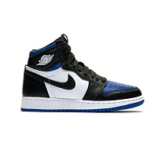
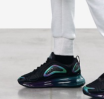

Jordan

Más de 1.300 fotos y todas las zapatillas Jordan diseñadas desde 1985 (o sea todas). Así se promociona el proyecto que está llevando adelante Jay Lawrence, un emprendedor que recurrió a la plataforma de financiamiento colectivo Kickstarter (www.kickstarter.com) para lograr editar este fantástico libro.
A 2 semanas de completar el plazo para la recaudación, el proyecto ha ganado notoriedad internacional.
Nike

Las Nike Air Max son zapatos producidos por la sociedad americana de vestimenta y accesorios Nike en el 1987 como primeros modelos de la Tecnología Air Visible.
Los zapatos Nike Air Max utilizan un ancho cojinete de aire puesto sobre el talón y visible a lado de la intersuola para la mayoría de los modelos.
Adidas

Adidas AG (pronunciación alemana:[adiˌdas] Acerca de este sonido (escuchar); estilizado adidas, con minúsculas, desde 1949)2 es una compañía multinacional alemana fundada en 1949 dedicada a la fabricación de equipamiento deportivo y productos de moda (bolsos, camisas, relojes, gafas, etc.). La empresa también es patrocinadora de eventos y figuras deportivas a nivel mundial.